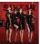

곡설명

기다림은 끝났다! 1st 미니앨범 [ALONE] 발매! SISTAR '팜므파탈'의 치명적인 매력으로 컴백!
한국 대중음악계의 테이스트 메이커(TASTE MAKER)들이 참여, 역대 최강의 퀄리티를 자랑하는 미니앨범 [ALONE]! 실연의 아픔을 담은 애절한 가사가 중독적인 타이틀곡 "나혼자"
2010년6월 "Push Push"로 데뷔, "가식걸", "니까짓게" "Ma boy"(씨스타19)’ 그리고 지난 해 "So Cool" 까지 연이은 성공으로 '음원불패'라는 수식어에 걸맞게 성공가도를 달려온 초특급 걸 그룹 씨스타가 2012년4월12일 1st 미니앨범 [Alone]을 발표하고, 타이틀곡 "나 혼자"로 화려하게 컴백했다.